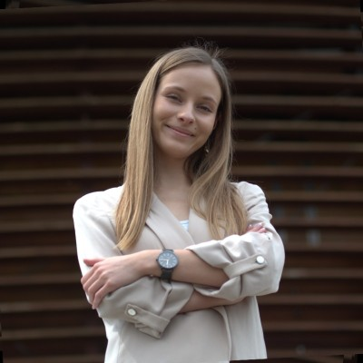

CERN
Organization
Data & Reporting Specialist at CERN
I am Weronika Król, a data professional based in Geneva, Switzerland. My work sits at the intersection of analytics, reporting, visualization, and stakeholder collaboration, with hands-on experience across Python, SQL, dbt, Power BI, Tableau, and R Shiny.

Organizations, Tools & Languages
CERN
Organization
Gdansk Tech
University
T-Mobile
Organization
Python
Language
R
Language
PostgreSQL
Database
Git
Tool
Jira
Platform
Confluence
Platform
English
Working proficiency
Polish
Native
70+
pages in CERN's flagship HR statistical report
300+
SQL and HQL analyses delivered during my T-Mobile experience
5+
Power BI knowledge-sharing sessions facilitated across teams
About
I enjoy building structure where data environments feel messy or fragmented. At CERN, I have worked on everything from rebuilding HR data foundations to leading reporting initiatives with dozens of stakeholders and translating business needs into technical delivery.
Along the way, I have combined engineering discipline with communication skills: designing data models, shaping dashboards, presenting recommendations, and helping teams adopt better tools and workflows. I care deeply about clarity, usefulness, and making complex information feel approachable.
Experience
Education
Gdansk University of Technology
BSc in Data Engineering
Honours graduate with a concentration in creating Big Data solutions, completed in English with a GPA of 4.65/5.
Thesis completed in collaboration with NASDAQ, comparing ARIMA and LSTM models for stock price prediction.
Publication
ARIMA vs LSTM on NASDAQ stock exchange data
Kobiela, D., Krefta, D., Król, W., & Weichbroth, P. (2022)
Published in Procedia Computer Science, exploring the performance of statistical and deep learning methods for time series forecasting with Python.
Highlights
Imperial Female Future Leader Award
Panelist at Perspektywy Women in Tech 2024 & 2025
Big Data - Big Challenges 2024 Mentee
Golden Badge Award for top 2% of the year
Rector Scholarship for best students
Intel Scholarship Program - New Technologies for Women
Volunteering
President of CERN mentoring program 2025-2026 and co-organizer of the 2024-2025 edition.
Volunteer at the IT Girls Foundation.
Tourist guide at CERN and volunteer at the CERN Alumni Third Collisions 2024 conference.
Mentor in Intel's New Technologies for Women for Ukraine initiative.
Skills & Interests
I also bring strong communication, public speaking, organization, teamwork, and stakeholder management skills.
Outside work, I love violin, salsa and bachata, hiking, paragliding, camping, and skiing.
Contact
If you would like to talk about data, reporting, analytics, or collaboration opportunities, I would love to hear from you.